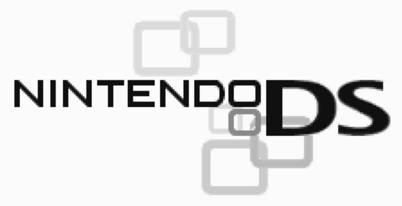
Scratching the Surface
Last year, the first iteration of The State of Emulation focused exclusively on the progress of preserving officially licensed Game Boy hardware. That goal has finally been achieved after many years of hard work and research by myself and the larger emulation and retrogaming community. Every single peripheral, add-on, and unique cartridge across the Game Boy platform can now be virtually recreated by emulation. From mundane items like Link Cables to exotic ones like infrared controlled robots, each piece of the Game Boy's history has been carefully reverse-engineered, documented, and made playable in various emulators.
Doing this for the Game Boy, Game Boy Color, and Game Boy Advance was a massive undertaking, with well over 40+ unique products that needed special attention to properly emulate. Even so, we eventually overcame every obstacle these systems could throw at us. Unfortunately, the Game Boy only represents the very tip of the iceberg of all the kinds of extra hardware available for video game consoles and handhelds. Across something like the NES/Famicom, for example, there are still plenty of gaps for unemulated devices and accessories. While the Game Boy is complete, other systems have a host of games that can't be played simply because no emulator supports the extra hardware needed by the software.
Here, I'll be highlighting another system that could use a lot more love and attention in this regard. I figure I'd make this something of an annual report at the end of the year, with each year focusing on a new platform and what special hardware is/isn't emulated. For this time around, I'll stick to what I know and talk about the Nintendo DS. For what it's worth, developers were every bit as ambituous with the DS as they were with the Game Boy. While the previous generations of Nintendo's handhelds had some pretty wild stuff going on, that same energy carried over to the DS without skipping a beat. As I'll demonstrate later, DS hardware contained a wide spectrum of innovative and decidedly bold ideas. All of them are worth saving, even if it takes years to do so.
Once again, I'll be limiting the list to officially licensed devices. That is to say, it only contains products commercially sold to the public and given Nintendo's approval. These represent the ecosystem that Nintendo curated for the DS as a brand. Most of the Third-Party stuff on the DS are flashcarts, cheats like the Action Replay, and the odd motion sensor. Nonetheless, they won't make the cut here. This does not discount their importance (especially historically in relation to homebrew), but the vast majority of hardware in danger of disappearing falls into the officially licensed category. Like last time, 3 colors are used to indicate the current status of emulation for each item:
Green = Full Emulation.
Yellow = Partial Emulation.
Red = No Emulation.
Full Emulation implies that the hardware in question has the vast majority of its capabilities implemented, such that an average user could enjoy most of what it offers. Partial Emulation denotes hardware that has some of its features emulated to a certain extent. This includes features that are technically playable (through WIP builds, Pull Request branches, or scripts) but are not currently implemented by existing emulators. No Emulation signifies that no emulator supports the hardware in any shape or form. For Partial or No Emulation categories, I will note cases where research has at least been done and/or where experimental forms of emulation do exist.
Nintendo DS Hardware
Activity Meter (NTR-027)
Emulated By: Experimental Desmume Build, GBE+
Notes: Only initial IR communication emulated at this time
Arkanoid Paddle
Emulated By: Desmume
Notes:
Bayer Digit Glucose Meter
Emulated By: Experimental Desmume Build
Notes: Researched with Proof-of-Concept
Bey Point Reader
Emulated By: Experimental Desmume Build
Notes: Researched with Proof-of-Concept
Bluetooth Cartridge - NTR-005(-04)
Emulated By: Experimental Desmume Build
Notes: Researched with Proof-of-Concept
Car-based GPS
Emulated By: Experimental Desmume Build
Notes: Researched with Proof-of-Concept
DSVision
Emulated By: NONE
Notes:
Easy Piano
Emulated By: Desmume
Notes:
Facening Scan/DS Scanner - NTR-014
Emulated By: Experimental Desmume Build
Notes: Researched with Proof-of-Concept
Guitar Grip
Emulated By: Desmume, melonDS
Notes:
HCV-1000
Emulated By: Desmume, GBE+
Notes:
Hoshizora Navi Azimuth Cartridge - NTR-030
Emulated By: Experimental Desmume Build
Notes: Researched with Proof-of-Concept
Infrared Cartridge - NTR-031
Emulated By: Experimental Desmume Build, GBE+
Notes: Fully researched. Only initial connection established
Magic Reader
Emulated By: GBE+
Notes:
Memory Expansion Pak
Emulated By: Desmume, GBE+, melonDS
Notes:
Motion Pack
Emulated By: Drastic, melonDS
Notes:
One-Seg TV Tuner - NTR-016
Emulated By: NONE
Notes: Research ongoing. Cheat code allows access to main menu
PokeWalker
Emulated By: PocketWalker, PokeStroller, Powar
Notes: IR Communication w/melonDS branch is WIP
Rumble Pak
Emulated By: Desmume, GBE+, melonDS
Notes:
Slide Controller - NTR-012
Emulated By: Experimental Desmume Build, iDeaS plugin
Notes: Researched with Proof-of-Concept
Solar Sensor
Emulated By: melonDS
Notes:
Teku Teku Angel
Emulated By: Python Script
Notes: Communicates with DS via passwords
Thrustmaster
Emulated By: GBE+
Notes:
Wappy Dog
Emulated By: Python and Lua Scripts
Notes: Researched with Proof-of-Concept
Wantame Card Scanner
Emulated By: GBE+, .WAV sound files
Notes:
Wave Scanner
Emulated By: GBE+, .WAV sound files
Notes:
Wii-to-DS Communication
Emulated By: NONE
Notes:
Wireless Keyboard
Emulated By: Experimental Desmume Build and Lua Scripts
Notes: Researched with Proof-of-Concept
As we can see from this list, the Nintendo DS is actually in a fairly decent state. 14 out of 28 special hardware features are fully emulated and available for anyone to dabble with. That's a solid 50% already, and things have never looked better in recent years. A large number of devices have been researched, with preliminary emulation implemented in experimental builds of Desmume. All of this hard work comes from one source: a dedicated person known as windwakr. Since 2024, they've been busy picking apart all sorts of DS hardware and freely sharing that info online via GitHub and the Desmume technical forum. Without these massive efforts, a great deal of the above chart would be covered in red!
Fully emulating all of this hardware is going to take more time, but for now we have a clear path on how to close some of the most serious gaps regarding the DS. Below, I'll discuss the remaining products that need our attention and some of the challenges we face in getting them properly emulated.
The Activity Meter is an infrared pedometer used for 2 DS titles that centered on walking and exercise: Personal Trainer: Walking (or Personal Trainer: Walk with Me, depending on your region) and Active Health with Carol Vorderman. I started snooping around this waaaay back in 2020, capturing the IR transmissions between this and the DS' infrared cartridge. While I provided a decent amount of info to start, nocash (author of no$gba) finished the bulk of research. I attempted to start emulating the pedometer and got through most of the initial setup.
Unfortunately, GBE+ has some issues that start to mess with the communication protocol; it all breaks down before the user can finish registration. We'd probably be further along now if I had fixed GBE+ by now, but at the moment the emulator can successfully start the first parts of the protocol and get the game to recognize the Activity Meter. Fortunately, windwakr had much more success using Desmume as the basis for their experiments!
The Infrared Cartridge itself was used in conjunction with the above-mentioned exercise software and Pokemon Heart Gold/Soul Silver to communicate with the PokeWalker. All the relevant details are explained by nocash in the GBATEK document, so we know exactly how the infrared commands work. It's just a matter of adding support for that in an emulator at this point.
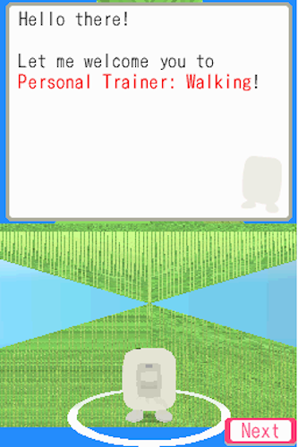 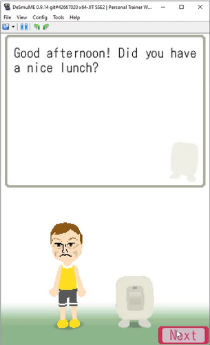
The Bayer Digit Glucose Meter is perhaps unsurprisingly mostly a copy+paste version of the Glucoboy. It needs some special attention regarding detection as a Slot-2 device, but for the most part, it follows the behavior of the original GBA peripheral. This is relatively low-hanging fruit, so-to-speak, with the hardest part probably being adding a GUI menu or .ini entry for all the different configuration options for Glucose Points and such.
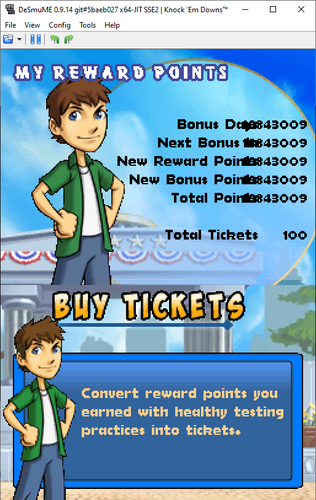
The Bey Point Reader is a Slot-2 accessory that reads Bey Points from a Beypointer from the Beyblade franchise. As I understand things, it was a way of tracking real-life points from Beyblade matches and transferring them to the game Metal Fight Beyblade. windwakr has provided all of the necessary details for emulating the Bey Point Reader, along with a patch for Desmume's code. This one is another easy target that someone could properly implement into an emulator without much trouble. Again, the only other considerations I can see are how to handle the points via a menu or .ini file, which isn't that big of a deal.
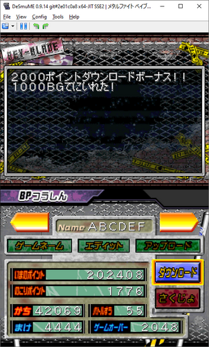
The Bluetooth Cartridge on the DS is closely linked to software such as Kuruma de DS and Learn with Pokémon: Typing Adventure. The former involves connecting with the built-in GPS of several car models. Think of it as an interactive mapping system, one that would display tourist information and provide quizzes based on the player's location. If it sounds nuts, that's because it is. windwakr managed to get Kuruma de DS booting, but that's just the start of emulating a full GPS and map system.
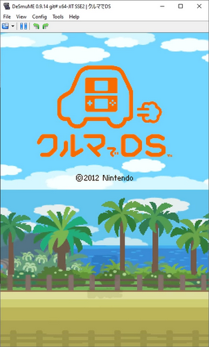
The DSVision is the direct successor for AM3's Advance Movie Adapter. Right after the GBA, the company turned its attention to the DS. Once again, they got Nintendo's official blessings for the project. The product itself is a simple DS cartridge with a slot for a micro SD card. While easily mistaken for a flashcart, the DSVision allowed users to download licensed videos (and other things like textbooks) from a virtual storefront and play them back on the DS. How the cartridge works and what format the videos need to be in is still a mystery. Finding and preserving all of the avilable content will also be a hard task.
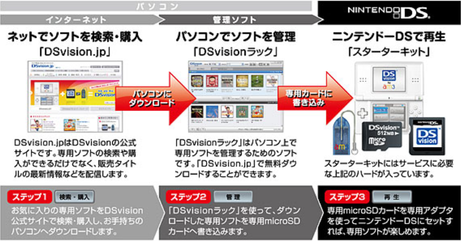
The Facening Scan (also known as the DS Scanner) is a Slot-2 peripheral with an embedded camera. It was only used in 2 titles: Facening de Hyoujou Yutaka ni Inshou Up: Otona no DS Kao Training and Shiseido Beauty Solution Kaihatsu Center Kanshuu: Project Beauty. The first is a facial expression trainer and the second is a makeup guide. The Facening Scan is technically the 4th camera ever officially supported by Nintendo's handheld line of consoles, after the Game Boy Camera, Campho Advance, and the DSi's integrated cameras. windwakr has achieved preliminary emulation of the Facening Scan, and I'm currently doing homebrew hardware tests on it. It's a fairly complicated accessory, but emulation-wise it's only as difficult as any other camera. The chief concern is supporting camera input from the user (webcam, phone, or a still image).
The Hoshizora Navi Azimuth Cartridge is a special DS cartridge with 3-way geomagnetic compass. Along with the software, it acts as an azimuth, basically a tool that helps you find the position of stars. Once again, windwakr has figured out most of the commands needed to boot the game with basic inputs for the compass. It still needs a bit more research regarding the cartridge's accelerometer and any specific calibrations the compass uses, however.
Hoshizora Navi has a free-look mode with the D-Pad, so emulating the compass itself is technically not necessary if users just want to see what the software offers. In the future though, there is the potential for using a phone's built-in sensors to manipulate the compass for a more realistic experience. This could be either on an Android or iOS-based DS emulator. Personally, for GBE+, I would use a JavaScript-based webapp to send sensor data over a network to the emulator OR just use the gyro input from a controller like the DS4/DS5.
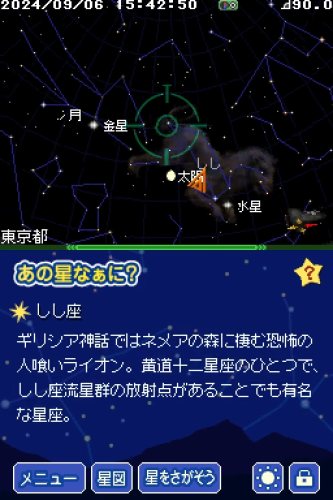
The One-Seg TV Tuner is only the 2nd (and last) TV Tuner Nintendo officially allowed on their handhelds. It came out shortly after the Agatsuma TV Tuner. This tuner, however, was geared towards receiving digital TV signals rather than analog ones. It's also a Slot-1 device, being the largest DS cartridge ever produced. Research is still currently ongoing, but for now an Action Replay code allows users to view the main menu. Once it's been looked into a bit more, an emulator would have to recreate the TV channels somehow, which is the biggest hurdle. Options include grabbing web streams or streaming from user provided files.
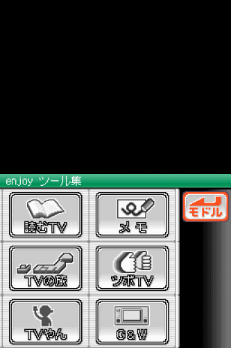
The Slide Controller is essentially an optical mouse attached to the DS' Slot-2. Used by the game Mag Kid Slider, it allows players to sit the DS on a flat surface and move the entire handheld around to control objects in the game. It's a really off-the-wall kind of idea that's actually quite fun on real hardware. The device itself is well documented, but currently no emulator officially supports it. Well, supposedly iDeaS could play it to some extent via a plugin. That emulator is quite old and abandoned by now, and the alleged plugin has since been lost over time. I looked into that several years back but had no success finding it...
In any case, windwakr made a Pull Request for Desmume a while ago with working code for the Slide Controller. It hasn't been merged yet, but the Slide Controller should be easy to implement in other emulators as well.
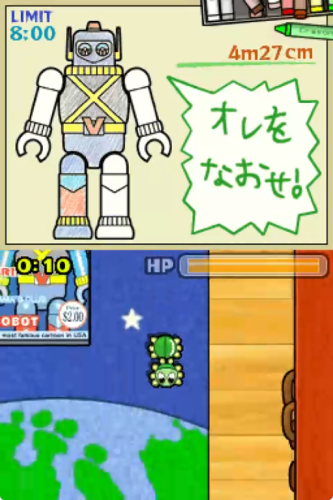
Wappy Dog is a robot dog/cyber-companion in the same vein as many 2000s-era toys like Tekno. The difference here is that users communicate with the dog via toys and the DS itself. This is achieved by using microphones and sound waves. The DS sends commands from its speakers, and using its microphone it also determines the dog's response. Conversely, the dog listens for commands with its own internal microphone and use its speakers to respond.
windwakr has made Python scripts that can generate all possible waveforms for the dog's responses. Additionally, there is a Lua script for Desmume that lets users send commands (via memory editing). I'm not sure what the DS --> Wappy commands look like, so that may be an area for further investigation. Although it's not necessary, a deeper emulation model would probably provide for an animated sprite version of Wappy, similar to how I used subscreens to emulated the Cyber Drive Zoids toys.
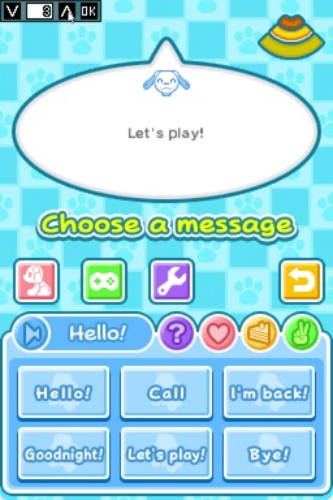 DS Emulation with Lua GUI" />
Wii-to-DS Communication has been a sort of "white whale" for DS emulation for well over a decade. There are many technical challenges here, namely that you need a suitable Wii emulator to somehow connect with an appropiate DS emulator. On top of that, you have to emulate the way each system uses wireless data transfers. This may require a great deal of synchronization. At this time, as far as I'm aware, Wii-to-DS and DS-to-Wii communication is still a far off dream. Dolphin could support this eventually, but for now a bunch of wireless functions are stubbed. melonDS would be the most likely candidate to implement this as well, however, no work is currently being done for this feature.
Given the sheer magnitude of this undertaking, it may be quite a while before any sort of collaboration starts giving results. There is still good reason to remain hopeful though, as melonDS has raised the bar for DS wireless emulation to a whole new level over the years. One of these days, we'll get there, I'm sure.
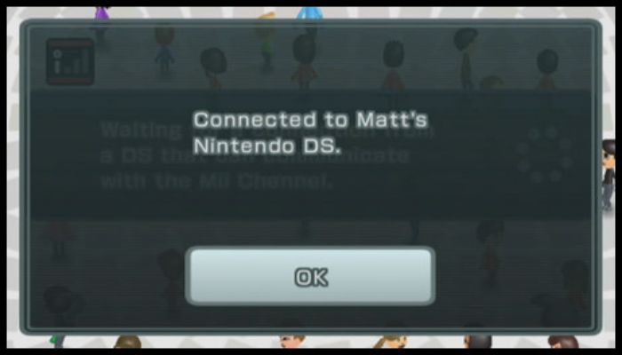
The Wireless Keyboard that came with Learn with Pokémon: Typing Adventure connects to the DS via a Bluetooth enabled cartridge. This one has been emulated for quite some time via Lua scripts for Desmume. windwakr recently demonstrated a build of Desmume that natively passes along the users keyboard to the game. Thankfully, the way the keyboard works isn't too hard to understand and it's been thoroughly documented. To go even further, an emulator could directly connect to the Pokemon keyboard through Bluetooth, similar to Dolphin's Bluetooth Passthrough functionality.
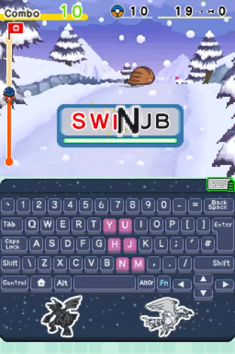
So those are all the serious gaps that need to be addressed going forward. Despite how many categories are in the yellow and red, I'm extremely optimistic that those will be tackled in the coming years. In the past 2 years alone, there has been a lot of progress, and I don't expect anything less from the future. With all the Game Boy peripherals already successfully emulated, I'm confident we'll be able to say the same for the DS soon enough.
2026 and Beyond
With most of the research already started and taken care of, a lot of the work boils down to making sure emulators actually support these devices. Personally, I have my eye on adding things like the Bayer Digit and Bey Point Reader to start off 2026. windwakr has stated that they have no interest in adding the necessary code to things like Desmume or melonDS, and that's where the rest of us have to step up. This stuff ain't gonna emulate itself after all.
If you've ever wanted to contribute something to the emulation community, this is an excellent opportunity. Although most of the items listed above seem wild and exotic, they're relatively straightforward when you sit down and look at how they work. In an emulator, they're generally isolated from some of the system's nitty-gritty details like CPU timers, the 3D graphics FIFO, and dozens of I/O registers. Emulating these things often simply involves waiting for the DS to send some kind of input and giving the appropiate output back. It's perfect for beginners to play around with. Whether you end up making a customized branch or get something pushed to the main repo of an existing emulator, this is a great chance to help improve DS emulation.
I'm certainly motivated to see this happen. Although there are still other consoles that need our attention, the DS has a large amount of peripherals we can take care of here and now. Given the handheld's impact on video game history, this isn't something we can ignore for long either. I can hardly believe it myself, but the system is over 20 years old, and all of its hardware continues to age. In any case, 2026 will definitely feature some huge developments for video game preservation. Until next time, always remember: Never give up. Never surrender. Emulate everything.